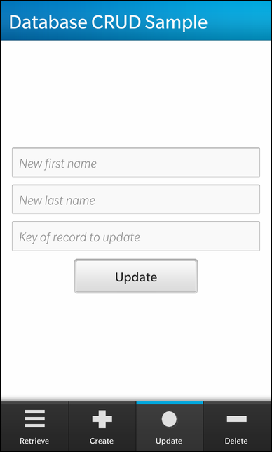
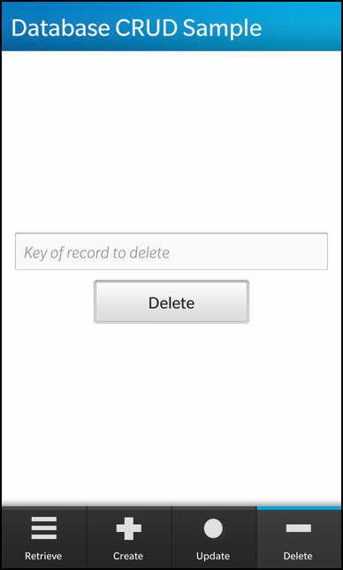

Database CRUD Example
Files:
- databasecrud/precompiled.h
- databasecrud/assets/CreatePage.qml
- databasecrud/assets/DeletePage.qml
- databasecrud/assets/ErrorPage.qml
- databasecrud/assets/PageBase.qml
- databasecrud/assets/RetrievePage.qml
- databasecrud/assets/UpdatePage.qml
- databasecrud/assets/main.qml
- databasecrud/src/Person.cpp
- databasecrud/src/Person.hpp
- databasecrud/src/app.cpp
- databasecrud/src/app.hpp
- databasecrud/src/main.cpp
- databasecrud/databasecrud.pro
- databasecrud/translations/databasecrud.pro
Description
The Database CRUD example demonstrates how to create, read, update and delete records from a database table using the SqlDataAccess instance.




Overview
In this example we'll learn how to use the QSqlDatabase and SqlDataAccess to create databases, tables, records and how to retrieve, update and even delete them.
UI
The UI of this sample application is very simplistic, made up of four Tab's that represent each of the database table record stages, such as "Retrieve", "Create", "Update" and "Delete".
The business logic of the application is encapsulated in the "app" class, which provides the various invokable methods for each one of these actions.
Tab { title: qsTr("Retrieve") imageSource: "asset:///images/retrieve.png" PageBase { databaseOpen: root.databaseOpen page: "RetrievePage.qml" } } Tab { title: qsTr("Create") imageSource: "asset:///images/create.png" PageBase { databaseOpen: root.databaseOpen page: "CreatePage.qml" } } Tab { title: qsTr("Update") imageSource: "asset:///images/update.png" PageBase { databaseOpen: root.databaseOpen page: "UpdatePage.qml" } } Tab { title: qsTr("Delete") imageSource: "asset:///images/delete.png" PageBase { databaseOpen: root.databaseOpen page: "DeletePage.qml" } }
Each of these Tab's provides an interface to invoke one of the methods that was exposed through the _app instance that was introduced into the qml context using setContextProperty(). Each Tab references the custom component PageBase, which uses a ControlDelegate to provide a delegate to the control which is dynamically loaded.
Page { id: root property bool databaseOpen: false property string page titleBar: TitleBar { title: qsTr("Database CRUD Sample") } ControlDelegate { source: databaseOpen ? root.page : "ErrorPage.qml" delegateActive: true } }
The page is constructed using the Qml source that is supplied to the ControlDelegate. The control is created from the Qml asset file that is provided via the page property, and is only created if the database connection is open, otherwise an error container is displayed with the error message. Each of the Tab's page is created using this base component.
Container { layout: DockLayout { } Container { horizontalAlignment: HorizontalAlignment.Center verticalAlignment: VerticalAlignment.Center leftPadding: 30 rightPadding: 30 TextField { id: firstNameCreateTextField horizontalAlignment: HorizontalAlignment.Center hintText: qsTr("First Name") } TextField { id: lastNameCreateTextField horizontalAlignment: HorizontalAlignment.Center hintText: qsTr("Last Name") } Button { horizontalAlignment: HorizontalAlignment.Center text: qsTr("Create") onClicked: { _app.createRecord(firstNameCreateTextField.text, lastNameCreateTextField.text); } } } }
The create container that provides Name TextField's and a "Create" Button for creating a person record.
Container { layout: DockLayout { } Container { horizontalAlignment: HorizontalAlignment.Center verticalAlignment: VerticalAlignment.Center leftPadding: 30 rightPadding: 30 TextField { id: idDeletionTextField horizontalAlignment: HorizontalAlignment.Center hintText: qsTr("Key of record to delete") } Button { horizontalAlignment: HorizontalAlignment.Center text: qsTr("Delete") onClicked: { _app.deleteRecord(idDeletionTextField.text); } } } }
The delete container that provides record key TextField and a "Delete" Button for deleting a person record.
Container { bottomPadding: 30 ListView { horizontalAlignment: HorizontalAlignment.Fill dataModel: _app.dataModel listItemComponents: [ ListItemComponent { type: "item" StandardListItem { imageSource: "asset:///images/icon1.png" title: qsTr("%1 %2").arg(ListItemData.firstName).arg(ListItemData.lastName) description: qsTr("Unique Key: %1").arg(ListItemData.customerID) } } ] } Button { horizontalAlignment: HorizontalAlignment.Center text: qsTr("Retrieve") onClicked: { _app.readRecords(); // Refresh the list view. } } }
The retrieve container that provides a ListView using StandardListItem to display person records and a "Retrieve" Button for retrieving the database table records for display.
Container { layout: DockLayout { } Container { horizontalAlignment: HorizontalAlignment.Center verticalAlignment: VerticalAlignment.Center leftPadding: 30 rightPadding: 30 TextField { id: firstNameUpdateTextField horizontalAlignment: HorizontalAlignment.Center hintText: qsTr("New first name") } TextField { id: lastNameUpdateTextField horizontalAlignment: HorizontalAlignment.Center hintText: qsTr("New last name") } TextField { id: idUpdateTextField horizontalAlignment: HorizontalAlignment.Center hintText: qsTr("Key of record to update") } Button { horizontalAlignment: HorizontalAlignment.Center text: qsTr("Update") onClicked: { _app.updateRecord(idUpdateTextField.text, firstNameUpdateTextField.text, lastNameUpdateTextField.text); } } } }
The update container that provides Name, record key TextField's and a "Update" Button for updating the person record fields.
Container { layout: DockLayout { } background: Color.Red Label { horizontalAlignment: HorizontalAlignment.Center verticalAlignment: VerticalAlignment.Center text: qsTr("ERROR: Database Initialization Failed") } }
The error container that provides a Label for displaying an error when database initialization fails.
App
This app class contains the business logic dealing with the database instance.
App::App() : m_dataModel(0) { // Initialize the Group Data Model before setitng up our QML Scene // as the QML scene will bind to the data model initDataModel(); // Create a QMLDocument from the definition in main.qml QmlDocument *qml = QmlDocument::create("asset:///main.qml").parent(this); //-- setContextProperty expose C++ object in QML as an variable // this must come before the next line so the root is instantiated after app is defined. qml->setContextProperty("_app", this); // Creates the root node object as defined in main.qml AbstractPane *root = qml->createRootObject<AbstractPane>(); // Give the application the root node to display. Application::instance()->setScene(root); // Initialize the database, ensure a connection can be established // and that all the required tables and initial data exists const bool dbInited = initDatabase(); // Inform the UI if the database was successfully initialized or not root->setProperty("databaseOpen", dbInited); }
The constructor intitializes the instance variables, and creates the qml document as well as setting the application scene to the created AbstractPane which stems from the document. Performs the GroupDataModel and QSqlDatabase initializations.
bool App::initDatabase() { // Initialize the database and create any tables needed for the app to function // properly if they do not already exist. // IMPORTANT NOTE: This function 'drops' the 'customers' table and recreates it // each time the application starts. This is done to ensure the application starts // with the same table each time for experimental purposes. This is not typical in // most applications however. QSqlDatabase database = QSqlDatabase::addDatabase("QSQLITE"); database.setDatabaseName(DB_PATH); // If we cannot open a connection to the database, then fail initialization // and display an error message if (database.open() == false) { const QSqlError error = database.lastError(); alert(tr("Error opening connection to the database: %1").arg(error.text())); qDebug() << "\nDatabase NOT opened."; return false; // return as if we cannot open a connection to the db, then below calls // will also fail } // Drop the 'customers' table if it exists so that the application // always start with an empty table. // Note: A typical application would NOT do this. // open the default database. SqlDataAccess *sqlda = new SqlDataAccess(DB_PATH); sqlda->execute("DROP TABLE IF EXISTS customers"); if(!sqlda->hasError()) { qDebug() << "Table dropped."; } else { const DataAccessError error = sqlda->error(); alert(tr("Drop table error: %1").arg(error.errorMessage()));//.arg(error.text())); } // Create the 'customers' table that was just dropped (if it existed) // with no data const QString createSQL = "CREATE TABLE customers " " (customerID INTEGER PRIMARY KEY AUTOINCREMENT, " " firstName VARCHAR, " " lastName VARCHAR);"; sqlda->execute(createSQL); if(!sqlda->hasError()) { qDebug() << "Table created."; } else { const DataAccessError error = sqlda->error(); alert(tr("Create table error: %1").arg(error.errorMessage()));//.arg(error.text())); return false; } return true; }
This method, when invoked, creates the database using QSqlDatabase. Every time you need to refer to the created database you can invoke QSqlDatabase::database() to get the connection instance. However, you can specify a name to the database() method to refer to another database connection if a name was given at creation time. It also creates an initial "customer" table in which the records are added, updated or removed from.
// ----------------------------------------------------------------------------------------------- // Synchronous Database Functionality with QSqlDatabase and QSqlQuery void App::createTable() { // 1. Get a reference to the database, which will automatically open the connection // if it is not already open. // NOTE: The below code assumes that the database being accessed is the 'default // connection' database. If a database connection was created with a registered // connection name then you would access the database via: // QSqlDatabase db = QSqlDatabase::database(<connectionName>); QSqlDatabase database = QSqlDatabase::database(); // 2. Create a query to execute. // The below query creates a table with customerID, firstName, and lastName columns // if it does not already exist. const QString createSQL = "CREATE TABLE IF NOT EXISTS customers ( " " customerID INTEGER PRIMARY KEY AUTOINCREMENT, " " firstName VARCHAR, " " lastName VARCHAR" ");"; // 3. Create an QSqlQuery object with which you can execute queries // NOTE: The QSqlDatabase function has an 'exec' function, however this // is deprecated and should be avoided. QSqlQuery query(database); if (query.exec(createSQL)) { alert(tr("Table creation query execute successfully")); } else { // If 'exec' fails, error information can be accessed via the lastError function // the last error is reset every time exec is called. const QSqlError error = query.lastError(); alert(tr("Create table error: %1").arg(error.text())); } // 4. Optionally close the database connection if we no longer plan to use it // Note that calling QSqlDatabase::database() will automatically re-open // the connection for us. // NOTE: Closing the database invalidates any QSqlQuery objects you have created // with this database connection. database.close(); } void App::dropTable() { // 1. Get a reference to the database, which will automatically open the connection // if it is not already open. // NOTE: The below code assumes that the database being accessed is the 'default // connection' database. If a database connection was created with a registered // connection name then you would access the database via: // QSqlDatabase db = QSqlDatabase::database(<connectionName>); QSqlDatabase database = QSqlDatabase::database(); // 2. When dropping a table, you should first verify if it exists or not. // Alternatively, you can embed into your SQL statement a check to see // if the table exists. // The below example embeds the check into the SQL statement. // NOTE: If you wish to check if the table exists in code, you can use the // below example: // if(database.tables().contains("customers")) { // alert(tr("The 'customers' table exists")); // } // 3. Create an QSqlQuery object with which you can execute queries // NOTE: The QSqlDatabase function has an 'exec' function, however this // is deprecated and should be avoided. QSqlQuery query(database); const QString dropSQL = "DROP TABLE IF EXISTS customers"; if (query.exec(dropSQL)) { alert(tr("Table drop query executed successfully.")); } else { // If 'exec' fails, error information can be accessed via the lastError function // the last error is reset every time exec is called. const QSqlError error = query.lastError(); alert(tr("Drop table error: %1").arg(error.text())); } // 4. Optionally close the database connection if we no longer plan to use it // Note that calling QSqlDatabase::database() will automatically re-open // the connection for us. // NOTE: Closing the database invalidates any QSqlQuery objects you have created // with this database connection. database.close(); } void App::createRecord(const QString &firstName, const QString &lastName) { // 1. Get a reference to the database, which will automatically open the connection // if it is not already open. // NOTE: The below code assumes that the database being accessed is the 'default // connection' database. If a database connection was created with a registered // connection name then you would access the database via: // QSqlDatabase db = QSqlDatabase::database(<connectionName>); QSqlDatabase database = QSqlDatabase::database(); // 2. Verify the table exists first, always a good safety pre-caution. // For performance, on application startup, you would verify that all tables exist // and can create or update any that do not. This would allow you to // skip this check to see if a table exists or not in the database. if (!database.tables().contains("customers")) { alert(tr("Create record error: customers table does not exist.")); } else { // 3. Create an QSqlQuery object with which you can execute queries // In this example we bind parameters in the query. A large advantage to using // bindings (aside from performance enhancements) is that input is automatically // escaped avoiding potential issues with odd characters (quotes) and prevents // SQL Injection attacks. // Note that for databases that do not support bindings, Qt simulates the binding // effects. // IMPORTANT NOTE: If ever accepting user information without using bindings, // be sure to 'escape' your queries. QSqlQuery query(database); query.prepare("INSERT INTO customers (firstName, lastName) VALUES(:firstName, :lastName)"); query.bindValue(":firstName", firstName); query.bindValue(":lastName", lastName); query.exec(); // Note that no SQL Statement is passed to 'exec' as it is a prepared statement. if (query.exec()) { alert(tr("Record created")); } else { // If 'exec' fails, error information can be accessed via the lastError function // the last error is reset every time exec is called. const QSqlError error = query.lastError(); alert(tr("Create record error: %1").arg(error.text())); } } // 4. Optionally close the database connection if we no longer plan to use it // Note that calling QSqlDatabase::database() will automatically re-open // the connection for us. // NOTE: Closing the database invalidates any QSqlQuery objects you have created // with this database connection. database.close(); }
These methods manipulate the database connection using appropriate sql queries to create, update and delete the records from the table. The queries use parameter binding, one advantage of binding is that the input is automatically escaped, avoiding potential issues with special characters. If the database does not support binding, Qt simulates the binding effects.
// Read all records from the database. // Clear the data model and refill it. void App::readRecords() { // 1. Create the local DB connection via SqlDataAccess instance. Note, creating instance // Will automatically open a connection to the database. SqlDataAccess *sqlda = new SqlDataAccess(DB_PATH); // 2. Create a query to search for the records // IMPORTANT NOTE: If accepting user input and not using bindings, be sure // to escape it to allow quote characters, and prevent SQL Injection attacks. // The below example is not a prepared statement and does not use bindings as // there is no user input to accept. const QString sqlQuery = "SELECT customerID, firstName, lastName FROM customers"; // 3. Call 'execute' on the SqlDataAccess. Note, that when using a SELECT action, // the retrieved records are stored in the QVariantList as QVariantMap objects. QVariant result = sqlda->execute(sqlQuery); if (!sqlda->hasError()) { int recordsRead = 0; // The data will be displayed in a group data model // Clear any previous reads from the data model first m_dataModel->clear(); if( !result.isNull() ) { // If the query is successful and results are not null // you can access the records through the QVariantList // by accessing the QVariantMap object at each index for the records values. // ImportantNote: The alternative is to add to the model directly exposing the records values for reference via qml. // You essentially get the same result as with the Person object but with less hassle. // m_dataModel->insertList(result.value<QVariantList>()); QVariantList list = result.value<QVariantList>(); recordsRead = list.size(); for(int i = 0; i < recordsRead; i++) { QVariantMap map = list.at(i).value<QVariantMap>(); Person *person = new Person(map["customerID"].toString(), map["firstName"].toString(), map["lastName"].toString()); Q_UNUSED(person); //NOTE: When adding an object to a DataModel, the DataModel sets // itself as the parent of the object if no parent has already been // set. Therefore, when clearing or removing an item from the data model // the data model will destroy the object if it is the parent of the object. m_dataModel->insert(person); } } qDebug() << "Read " << recordsRead << " records succeeded"; if (recordsRead == 0) { alert(tr("The customer table is empty.")); } } else { alert(tr("Read records failed: %1").arg(sqlda->error().errorMessage())); } }
This method queries the database for all the table records and creates a Person object instance for each record, which is than inserted into the data model for display. The value for each field is retrieved using the record field indexOf(), which is than supplied to the query result to extract the value for a particular field, i.e. name.